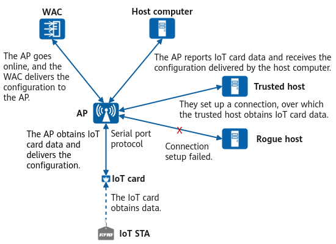
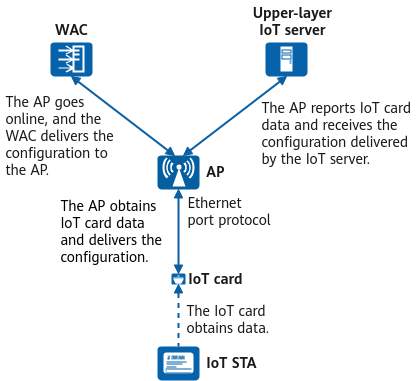
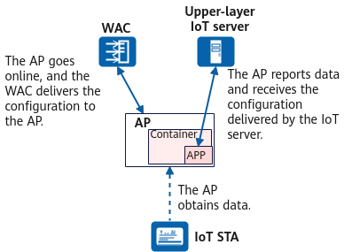

IoT Card Classification
According to the physical connection types, IoT cards can be classified into the following types:
- Peripheral Component Interconnect Express (PCIe) card
- USB card
- Built-in Bluetooth module
- RS485 card (RS485 serial port available only on some models)
According to the communication protocol or mode used between IoT cards and APs, IoT cards can be classified into the following types:
- Serial port card
- Network port card
- Container card
The connection type of serial applies to scenarios with a light traffic volume. When this connection type is used, the communication rate between IoT cards and APs does not exceed the maximum baud rate of serial interfaces, that is, 115200 bit/s. The connection type of ethernet applies to scenarios where electronic shelf labels (ESLs) are deployed.
In container card mode, container images are installed on APs to enable the APs with certain edge computing capabilities, reducing network costs.
Network Architecture of IoT Cards
Figure 1 shows the network architecture based on the serial port protocol.
During link establishment, the host computer, proxy trusted host, and AP use the C/S architecture, in which the AP can function as a client or server. In actual deployments, you can determine the AP role based on the role supported by the host computer. When configuring interconnection parameters, ensure that the client uses the same communication protocol as the server.
Figure 1 Network architecture based on the serial port protocol
Components in the figure and related concepts are described as follows:
- IoT STA: a terminal used to collect information, for example, RFID tags on persons or objects.
- IoT card: a module that integrates IoT functions. IoT cards are embedded in APs, or connected to the APs through USB ports or USB extension cables as external USB modules. The card can also be used to obtain data over air interfaces and report the data to APs in serial mode.
- AP: a device used to report the data from an IoT card to a host computer and receive instructions from the host computer. An AP is directly connected to a host computer, and delivers IoT card information to the host computer but not to a WAC.
- WAC: a device used to centrally manage AP onboarding and deliver configurations to the APs. It also displays information such as the IoT card status.
- Host computer: an upper-layer server to APs. It is used to receive data from and deliver configurations to IoT cards. In practice, the same or different host computers may receive data and deliver configurations.
- Trusted host: a host that is allowed to communicate with APs and obtain IoT card data because its IP address is within the specified IP address range. This prevents APs from being attacked by unauthorized devices.
- Rogue host: a device that accesses APs and obtains IoT card data without authorization.
Figure 2 shows the network architecture based on the Ethernet port protocol.
Figure 2 Network architecture based on the Ethernet port protocol
Components in the figure and related concepts are described as follows:
- IoT STA: a terminal used to display information, for example, electronic shelf label (ESL).
- IoT card: a module that integrates IoT functions. IoT cards are embedded in APs, or connected to the APs through USB ports or USB extension cables as external USB modules. The card can also be used to obtain data over air interfaces and report the data to APs in Ethernet mode.
- AP: a device used only for transparent data transmission of IoT cards. IoT card information is directly sent to the upper-layer IoT card management system without being forwarded to the WAC.
- WAC: a device used to centrally manage AP onboarding and deliver configurations to the APs. It also displays information such as the IoT card status.
- Upper-layer server to APs: a server used to receive data from IoT cards and deliver configurations to the IoT cards. In practice, the same or different host computers may receive data and deliver configurations.
Figure 3 shows the container-based network architecture.
After a container app is installed on an AP, the AP and upper-layer IoT server report data and deliver configurations through the container app.
Figure 3 Container-based network architecture